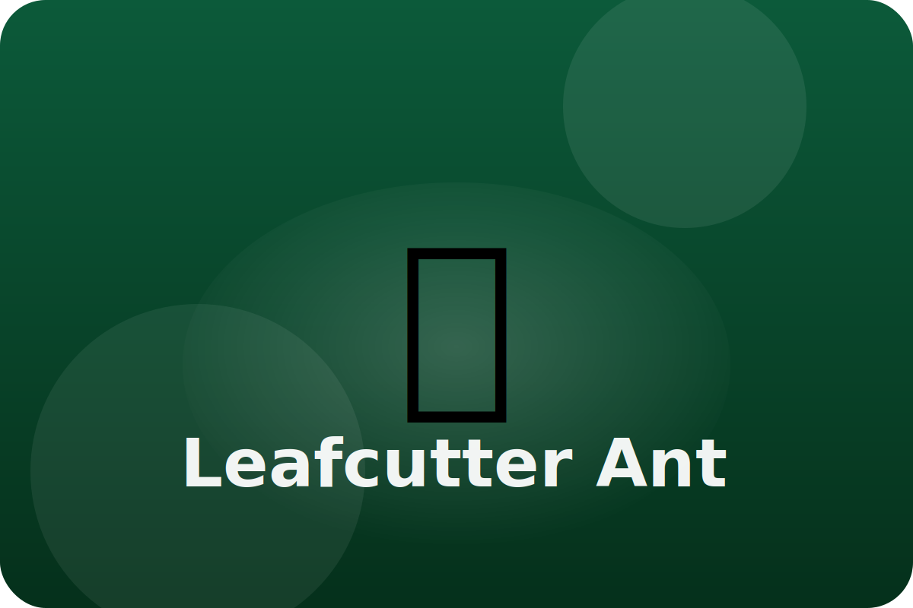

Rainforest
Working together underground
Leafcutter ants march in long lines carrying leaf pieces. They use the leaves to grow fungus, their favorite food.
Sharp Jaws
Strong jaws work like scissors, letting ants slice leaves much bigger than their bodies.
Fungus Farms
Underground gardens grow special fungus that feeds the whole colony, even the babies.
Helpful Bacteria
The ants keep friendly bacteria on their skin to stop mold from hurting their fungus crops.
Keep exploring the Leafcutter Ant
Watch the Leafcutter Ant in action
Leafcutter Ants: Mini-But-Mighty Farmers